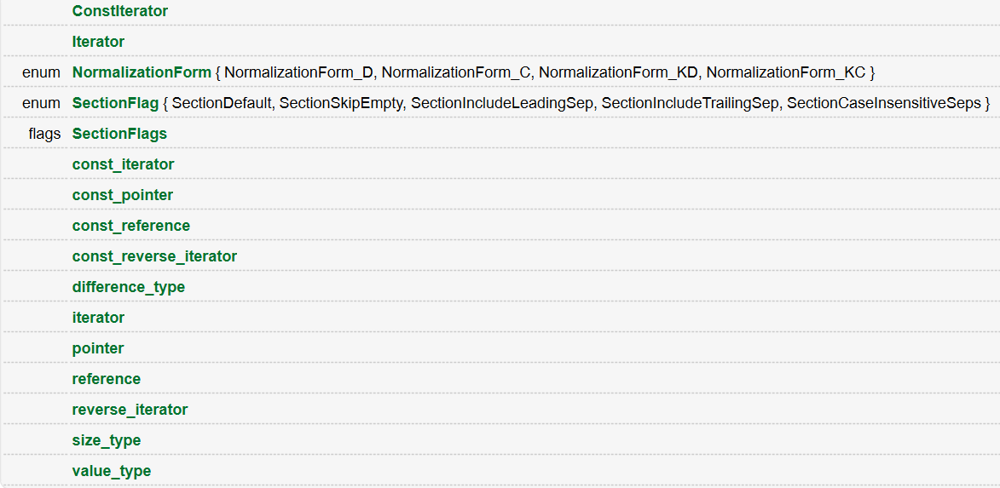

DeepLearningQt-ReadingDocuments1
写在前面：这是阅读英文文档+我翻译+我阅读资料的博客，目的是为了浏览并通读基本的 QT常用类型！
Qt深入理解 QString
QString的内容是QCore下的 C++类的一个子类。想要使用它和相关的API函数，请务必：
Header: #include <QString>
CMake: find_package(Qt6 REQUIRED COMPONENTS Core)
target_link_libraries(mytarget PRIVATE Qt6::Core)
qmake: QT += core| MakeFileplatform | Actions |
|---|---|
#include |
#include <QString> |
Cmake |
find_package(Qt6 REQUIRED COMPONENTS Core) target_link_libraries(mytarget PRIVATE Qt6::Core) |
qmake |
QT += core |

在QString下，允许访问的类型如下：
| num | Types |
|---|---|
| 1 | ConstIterator |
| 2 | Iterator |
| 3 | enum NormalizationForm { NormalizationForm_D, NormalizationForm_C, NormalizationForm_KD, NormalizationForm_KC } |
| 4 | enum SectionFlag { SectionDefault, SectionSkipEmpty, SectionIncludeLeadingSep, SectionIncludeTrailingSep, SectionCaseInsensitiveSeps } |
| 5 | flags SectionFlags |
| 6 | const_iterator |
| 7 | const_pointer |
| 8 | const_reference |
| 9 | const_reverse_iterator |
| 10 | difference_type |
| 11 | iterator |
| 12 | pointer |
| 13 | reference |
| 14 | reverse_iterator |
| 15 | size_type |
| 16 | value_type |
方便起见，我们顺序往下，遇到就阐述： |
构造函数
| API |
|---|
QString() |
QString(const QChar *unicode, qsizetype size = -1) |
QString(QChar ch) |
QString(qsizetype size, QChar ch) |
QString(QLatin1StringView str) |
QString(const int *str) |
QString(const char *str) |
QString(const QByteArray &ba) |
QString(const QString &other) |
QString(QString &&other) |
~QString() |
1.
constexpr QString::QString() noexceptConstructs a null string. Null strings are also considered empty.
See also isEmpty(), isNull(), and Distinction Between Null and Empty Strings. 也就是说，默认构造一个空的字符串！
2.
QString::QString(const QChar *unicode, qsizetype size = -1)explicitConstructs a string initialized with the first size characters of the QChar array unicode.
If unicode is 0, a null string is constructed.
If size is negative, unicode is assumed to point to a \0'-terminated array and its length is determined dynamically. The terminating null character is not considered part of the string.
QString makes a deep copy of the string data. The unicode data is copied as is and the Byte Order Mark is preserved if present.
See also fromRawData(). 也就是说：构造一个用QChar数组unicode的第一个大小字符初始化的字符串。如果unicode为0，则构造一个空字符串。如果大小为负数，则假定unicode指向一个以\0’结尾的数组，并且其长度是动态确定的。终止的null字符不被视为字符串的一部分。QString对字符串数据进行深拷贝。unicode数据按原样复制，如果存在，则保留字节顺序标记。
3.
QString::QString(QChar ch)Constructs a string of size 1 containing the character ch. 构造一个只含有一个字符的字符串
4.
QString::QString(qsizetype size, QChar ch)Constructs a string of the given size with every character set to ch. 构造一个只含有N个相同字符的字符串
5.
QString::QString(QLatin1StringView str); Constructs a copy of the Latin-1 string viewed by str.【QT】QLatin1String类的说明(补充)
QLatin1String类对US-ASCII/Latin-1编码的字符串进行了简单封装，可理解为关于const char*的一个浅封装。
许多QString的成员函数都用const char*代替QString作为参数实现重载。这包含拷贝构造函数，赋值操作，比较操作和其他不同的函数，比如insert(), replace(), indexOf(). 这些函数都做了优化以避免在函数调用时从const char*中构造一个QString对象。例如，假定str是QString对象，
i
f (str == "auto" || str == "extern"
|| str == "static" || str == "register") {
...
}
1234 上面的代码执行会比下面的代码执行快很多
if (str == QString("auto") || str == QString("extern")
|| str == QString("static") || str == QString("register")) {
...
}
1234 因为在第二部分的代码中会构造四个临时的QString对象，并复制字符串中的值。
在程序中定义了QT_NO_CAST_FROM_ASCII的应用程序是无法使用QString的const char*相关的API函数，因此Qt提供了QLatin1String类来更高效的利用const char*的类型，它就是一个关于const char*的一个浅封装。如果利用QLatin1String类来写上述的程序就是
if (str == QLatin1String("auto")
|| str == QLatin1String("extern")
|| str == QLatin1String("static")
|| str == QLatin1String("register") {
...
}
123456 虽然在代码输入的时候有点长，但是它的执行效率和上面第一段的代码一样，同时也比使用QString::fromLatin1()转换来的快。
得益于QString(const QLatin1String&)这个构造函数，QLatin1String可以在任何需要QString对象的地方使用，比如：
QLabel *label = new QLabel(QLatin1String("MOD"), this); QString str = “hello” 报错:
在程序中定义了QT_NO_CAST_FROM_ASCII的应用程序是无法使用QString的const char相关的API函数，因此Qt提供了QLatin1String类来更高效的利用const char的类型，它就是一个关于const char*的一个浅封装。
QString::QString(const int *str)
Constructs a string initialized with the UTF-8 string str. The given const char8_t pointer is converted to Unicode using the fromUtf8() function.7.
QString::QString(const char *str)Constructs a string initialized with the 8-bit string str. The given const char pointer is converted to Unicode using the fromUtf8() function.
You can disable this constructor by defining QT_NO_CAST_FROM_ASCII when you compile your applications. This can be useful if you want to ensure that all user-visible strings go through QObject::tr(), for example. 构造一个用8位字符串str初始化的字符串。给定的const char指针使用fromUtf8（）函数转换为Unicode。
在编译应用程序时，可以通过定义QT_NO_CAST_FROM_ASII来禁用此构造函数。例如，如果您想确保所有用户可见的字符串都通过QObject::tr()，这可能很有用。
Note: Defining QT_RESTRICTED_CAST_FROM_ASCII also disables this constructor, but enables a QString(const char (&ch)[N]) constructor instead. Using non-literal input, or input with embedded NUL characters, or non-7-bit characters is undefined in this case.注意：定义QT_RESTRICTED_CAST_FROM_ASICI也会禁用此构造函数，但会启用QString（const-char（.ch）[N]）构造函数。在这种情况下，使用非文字输入、嵌入NUL字符的输入或非7位字符是未定义的。8.
QString::QString(const QByteArray &ba)Constructs a string initialized with the byte array ba. The given byte array is converted to Unicode using fromUtf8().
You can disable this constructor by defining QT_NO_CAST_FROM_ASCII when you compile your applications. This can be useful if you want to ensure that all user-visible strings go through QObject::tr(), for example.
Note: : any null ('\0') bytes in the byte array will be included in this string, converted to Unicode null characters (U+0000). This behavior is different from Qt 5.x. 构造一个用字节数组ba初始化的字符串。给定的字节数组使用fromUtf8（）转换为Unicode。
在编译应用程序时，可以通过定义QT_NO_CAST_FROM_ASII来禁用此构造函数。例如，如果您想确保所有用户可见的字符串都通过QObject:：tr（），这可能很有用。
注意：字节数组中的任何null（’\0’）字节都将包含在此字符串中，并转换为Unicode null字符（U+0000）。这种行为与Qt 5.x不同。
9.
QString::QString(const QString &other)noexcept;Constructs a copy of other.
This operation takes constant time, because QString is implicitly shared. This makes returning a QString from a function very fast. If a shared instance is modified, it will be copied (copy-on-write), and that takes linear time.
See also operator=(). 构造其他的副本。
此操作需要恒定的时间，因为QString是隐式共享的。这使得从函数返回QString的速度非常快。如果共享实例被修改，它将被复制（写时复制），这需要线性时间。
另请参见运算符=（）。（缓式评估）
10.
QString::QString(QString &&other) noexceptMove-constructs a QString instance, making it point at the same object that other was pointing to. 移动构造函数！
QString::~QString() noexcept; Destroys the string: 析构字符串。
基本API
QString &QString::append(const QString &str)Appends the string str onto the end of this string. 在字符串后面追加内容
Example:
QString x = "free";
QString y = "dom";
x.append(y);
// x == "freedom"This is the same as using the insert() function: 也就是说，这个函数本质上等效于：
x.insert(x.size(), y);The` append()` function is typically very fast (constant time), because QString preallocates extra space at the end of the string data so it can grow without reallocating the entire string each time. 留心到QString会提前分配好空间
QString& QString::append(QChar ch)This function overloads append().Appends the character ch to this string. 通过重载append函数直接追加一个字符。
QString &QString::append(const QChar *str, qsizetype len)This function overloads append().
Appends len characters from the QChar array str to this string. 我们通过简单的重载`append`函数来完成向内追加一个长度为`len`的QChar字符串！
[since 6.0] QString& QString::append(QStringView v)This function overloads append().
Appends the given string view v to this string and returns the result.
This function was introduced in Qt 6.0. 这个函数是通过一个叫QStringView的方式载入到字符串的末尾!
Extensive for QChar and QStringView
QChar是什么:
原文链接：https://blog.csdn.net/a8039974/article/details/104126186
在Qt中,我们封装了unicode字符:
在Qt中，QChar是Qt处理字符的基本类型,是对unicode字符的封装。QChar使用2个字节的内存，在其内部维护了一个unsigned short 类型的内存。
QChar(); // 构造一个空字符，即'\0'
QChar(char ch); // 由字符数据ch构造，char类型作为QChar的构造参数时，会被转换为unsigned short，继而可被QChar接管
QChar(uchar ch); // 由无符号字符数据ch构造
QChar(ushort code); // 由无符号短整形数据code构造，code是Unicode编码
QChar(short code); //由 短整形数据code构造，code是Unicode编码
QChar(uint code); // 由无符号整型数据code构造，code是Unicode编码
QChar(int code); // 由整型数据code构造，code是Unicode编码 在Qt中，Unicode字符是没有任何标记或结构的16位实体。此类表示这样的实体。它是轻量级的，因此可以在任何地方使用。大多数编译器将其视为无符号空头。
QChar提供了完整的测试/分类功能，可以转换为其他格式，也可以转换为分解的Unicode格式，如果需要，还可以尝试比较和转换大小写。
分类函数包括标准c++标头
如果字符是某种类型的字符，它们都返回true;否则返回false。
这些分类功能
| functions | descriptions |
|---|---|
| isNull() | (返回true,如果字符’ \ 0 ‘), |
| isPrint() | (如果是任何类型的可打印字符,包括空格), |
| isPunct() | (任何类型的标点), |
| isMark () | (Unicode)、 |
| isLetter() | (字母), |
| isNumber() | (任何形式的数字字符,而不仅仅是0 - 9), |
| isLetterOrNumber(), isDigit() | 是不是字母或者是数字,或者是十进制数 |
所有这些都是围绕category()的包装器，它返回每个字符的unicode定义的类别。其中一些还计算派生属性(例如isSpace()如果字符属于类别分隔符_*或来自Other_Control类别的异常代码点，则返回true)。
QChar还提供了direction()，它指示该字符的“自然”写入方向。joiningType()函数指示字符如何与它的邻居连接(主要用于阿拉伯语或叙利亚语)，最后是has()，它指示当字符以“非自然”的书写方向打印时，是否需要镜像字符。
通过使用decomposition()，可以将组合的Unicode字符(比如ring)转换成分解的Unicode(“a”后面跟着“ring above”)。
在Unicode中，比较是不可能的，大小写转换是非常困难的。Unicode覆盖了“整个”世界，也包括世界上的大多数情况和排序问题。操作符==()和好友将纯粹基于字符的数值Unicode值(代码点)进行比较，而toUpper()和toLower()将在字符具有定义良好的大写/小写等价时进行大小写更改。对于依赖于语言环境的比较，使用QString::localeAwareCompare()。
转换函数包括unicode()(转换为标量)、toLatin1()(转换为标量，但将所有非latin -1字符转换为0)、row()(提供unicode行)、cell()(提供unicode单元格)、digitValue()(提供任意数字字符的整数值)和许多构造函数。
QChar提供了构造函数和强制类型转换操作符，这使得转换传统的8位字符变得很容易。如果您定义了QT_NO_CAST_FROM_ASCII和QT_NO_CAST_TO_ASCII，就像QString文档中解释的那样，您将需要显式地调用fromLatin1()，或者使用QLatin1Char，从一个8位的字符构造一个QChar，并且您将需要调用toLatin1()来获取8位的值。
#include <QCoreApplication>
#include <QChar>
#include <QDebug>
int main(int argc, char *argv[])
{
QCoreApplication a(argc, argv);
char ch1 = 'h';
QChar ch = 'hh';
qDebug("%x",ch);
qDebug("%x",ch1);
return a.exec();
}输出结果：
6868
68QStringView
快速简介:
The QStringView class provides a unified view on UTF-16 strings with a read-only subset of the [QString](https://doc.qt.io/qt-5/qstring.html) API. QStringView类通过[QString]的只读子集提供了UTF-16字符串的统一视图.
如何引入:
| Header: | #include |
|---|---|
| qmake: | QT += core |
| Since: | Qt 5.10 |
Public Types
| typedef | const_iterator |
|---|---|
| typedef | const_pointer |
| typedef | const_reference |
| typedef | const_reverse_iterator |
| typedef | difference_type |
| typedef | iterator |
| typedef | pointer |
| typedef | reference |
| typedef | reverse_iterator |
| typedef | size_type |
| typedef | storage_type |
| typedef | value_type |
Public Functions
| QStringView(const StdBasicString &str) | |
|---|---|
| QStringView(const QStringRef &str) | |
| QStringView(const QString &str) | |
| QStringView(const Char *str) | |
| QStringView(const Char (&)[N] string = N) | |
| QStringView(const Char first*, const Char last*) | |
| QStringView(const Char *str, qsizetype len) | |
| QStringView(std::nullptr_t) | |
| QStringView() | |
| QString | arg(Args &&… args) const |
| QChar | at(qsizetype n) const |
| QChar | back() const |
| QStringView::const_iterator | begin() const |
| QStringView::const_iterator | cbegin() const |
| QStringView::const_iterator | cend() const |
| void | chop(qsizetype length) |
| QStringView | chopped(qsizetype length) const |
| int | compare(QStringView str, Qt::CaseSensitivity cs = Qt::CaseSensitive) const |
| int | compare(QLatin1String l1, Qt::CaseSensitivity cs = Qt::CaseSensitive) const |
| int | compare(QChar ch) const |
| int | compare(QChar ch, Qt::CaseSensitivity cs) const |
| bool | contains(QChar c, Qt::CaseSensitivity cs = Qt::CaseSensitive) const |
| bool | contains(QStringView str, Qt::CaseSensitivity cs = Qt::CaseSensitive) const |
| bool | contains(QLatin1String l1, Qt::CaseSensitivity cs = Qt::CaseSensitive) const |
| qsizetype | count(QChar ch, Qt::CaseSensitivity cs = Qt::CaseSensitive) const |
| qsizetype | count(QStringView str, Qt::CaseSensitivity cs = Qt::CaseSensitive) const |
| QStringView::const_reverse_iterator | crbegin() const |
| QStringView::const_reverse_iterator | crend() const |
| QStringView::const_pointer | data() const |
| bool | empty() const |
| QStringView::const_iterator | end() const |
| bool | endsWith(QStringView str, Qt::CaseSensitivity cs = Qt::CaseSensitive) const |
| bool | endsWith(QLatin1String l1, Qt::CaseSensitivity cs = Qt::CaseSensitive) const |
| bool | endsWith(QChar ch) const |
| bool | endsWith(QChar ch, Qt::CaseSensitivity cs) const |
| QChar | first() const |
| QChar | front() const |
| qsizetype | indexOf(QChar c, qsizetype from = 0, Qt::CaseSensitivity cs = Qt::CaseSensitive) const |
| qsizetype | indexOf(QStringView str, qsizetype from = 0, Qt::CaseSensitivity cs = Qt::CaseSensitive) const |
| qsizetype | indexOf(QLatin1String l1, qsizetype from = 0, Qt::CaseSensitivity cs = Qt::CaseSensitive) const |
| bool | isEmpty() const |
| bool | isNull() const |
| bool | isRightToLeft() const |
| bool | isValidUtf16() const |
| QChar | last() const |
| qsizetype | lastIndexOf(QChar c, qsizetype from = -1, Qt::CaseSensitivity cs = Qt::CaseSensitive) const |
| qsizetype | lastIndexOf(QStringView str, qsizetype from = -1, Qt::CaseSensitivity cs = Qt::CaseSensitive) const |
| qsizetype | lastIndexOf(QLatin1String l1, qsizetype from = -1, Qt::CaseSensitivity cs = Qt::CaseSensitive) const |
| QStringView | left(qsizetype length) const |
| int | length() const |
| QStringView | mid(qsizetype start) const |
| QStringView | mid(qsizetype start, qsizetype length) const |
| QStringView::const_reverse_iterator | rbegin() const |
| QStringView::const_reverse_iterator | rend() const |
| QStringView | right(qsizetype length) const |
| qsizetype | size() const |
| QList |
split(QStringView sep, Qt::SplitBehavior behavior = Qt::KeepEmptyParts, Qt::CaseSensitivity cs = Qt::CaseSensitive) const |
| QList |
split(QChar sep, Qt::SplitBehavior behavior = Qt::KeepEmptyParts, Qt::CaseSensitivity cs = Qt::CaseSensitive) const |
| QList |
split(const QRegularExpression &sep, Qt::SplitBehavior behavior = Qt::KeepEmptyParts) const |
| bool | startsWith(QStringView str, Qt::CaseSensitivity cs = Qt::CaseSensitive) const |
| bool | startsWith(QLatin1String l1, Qt::CaseSensitivity cs = Qt::CaseSensitive) const |
| bool | startsWith(QChar ch) const |
| bool | startsWith(QChar ch, Qt::CaseSensitivity cs) const |
| double | toDouble(bool *ok = nullptr) const |
| float | toFloat(bool *ok = nullptr) const |
| int | toInt(bool *ok = nullptr, int base = 10) const |
| QByteArray | toLatin1() const |
| QByteArray | toLocal8Bit() const |
| long | toLong(bool *ok = nullptr, int base = 10) const |
| qlonglong | toLongLong(bool *ok = nullptr, int base = 10) const |
| short | toShort(bool *ok = nullptr, int base = 10) const |
| QString | toString() const |
| uint | toUInt(bool *ok = nullptr, int base = 10) const |
| ulong | toULong(bool *ok = nullptr, int base = 10) const |
| qulonglong | toULongLong(bool *ok = nullptr, int base = 10) const |
| ushort | toUShort(bool *ok = nullptr, int base = 10) const |
| QVector |
toUcs4() const |
| QByteArray | toUtf8() const |
| int | toWCharArray(wchar_t *array) const |
| QStringView | trimmed() const |
| void | truncate(qsizetype length) |
| const QStringView::storage_type * | utf16() const |
| QChar | operator[](qsizetype n) const |
Related Non-Members(一些延申用到的API)
| uint | qHash(QStringView key, uint seed = 0) |
|---|---|
Detailed Description (English)
A QStringView references a contiguous portion of a UTF-16 string it does not own. It acts as an interface type to all kinds of UTF-16 string, without the need to construct a QString first.
The UTF-16 string may be represented as an array (or an array-compatible data-structure such as QString, std::basic_string, etc.) of QChar, ushort, char16_t or (on platforms, such as Windows, where it is a 16-bit type) wchar_t.
QStringView is designed as an interface type; its main use-case is as a function parameter type. When QStringViews are used as automatic variables or data members, care must be taken to ensure that the referenced string data (for example, owned by a QString) outlives the QStringView on all code paths, lest the string view ends up referencing deleted data.
When used as an interface type, QStringView allows a single function to accept a wide variety of UTF-16 string data sources. One function accepting QStringView thus replaces three function overloads (taking QString, QStringRef, and (const QChar*, int)), while at the same time enabling even more string data sources to be passed to the function, such as u"Hello World", a char16_t string literal.
QStringViews should be passed by value, not by reference-to-const:`
void myfun1(QStringView sv); // preferred
void myfun2(const QStringView &sv); // compiles and works, but slower If you want to give your users maximum freedom in what strings they can pass to your function, accompany the QStringView overload with overloads for
QChar
: this overload can delegate to the QStringView version:
void fun(QChar ch) { fun(QStringView(&ch, 1)); }even though, for technical reasons, QStringView cannot provide a QChar constructor by itself.
QString: if you store an unmodified copy of the string and thus would like to take advantage of QString‘s implicit sharing.
QLatin1String: if you can implement the function without converting the QLatin1String to UTF-16 first; users expect a function overloaded on QLatin1String to perform strictly less memory allocations than the semantically equivalent call of the QStringView version, involving construction of a QString from the QLatin1String.
QStringView can also be used as the return value of a function. If you call a function returning QStringView, take extra care to not keep the QStringView around longer than the function promises to keep the referenced string data alive. If in doubt, obtain a strong reference to the data by calling toString() to convert the QStringView into a QString.
QStringView is a Literal Type, but since it stores data as char16_t, iteration is not constexpr (casts from const char16_t* to const QChar*, which is not allowed in constexpr functions). You can use an indexed loop and/or utf16() in constexpr contexts instead.
Note: We strongly discourage the use of QList
详解
QStringView引用了它不拥有的UTF-16字符串的连续部分。它充当所有类型的UTF-16字符串的接口类型，而不需要构造QString
UTF-16字符串可以表示为数组（或数组兼容的数据结构，如QString），std::basic_string等）、“ushort”、“char16_t”或（在Windows等平台上，它是16位类型）“wchar_t”。
QStringView被设计为一种接口类型；它的主要用例是作为函数参数类型。当QStringViews用作自动变量或数据成员时，必须注意确保引用的字符串数据（例如，由QString拥有)在所有代码路径上都比QStringView过期，以免字符串视图最终引用已删除的数据。
当用作接口类型时，QStringView允许单个函数接受各种各样的UTF-16字符串数据源。因此，一个接受QStringView的函数替换了三个函数重载（取QString，QStringRef，和（const QChar*，int）），同时使更多的字符串数据源能够传递给函数，例如u“Hello World”，char16_t字符串文字。
QStringViews应通过值传递，而不是通过引用const:
为啥看着:应用错误收集 (thinbug.com)
他们在文档中说应该按值传递，因为QStringView本身并不是字符串，它只是一种接口（嗯，这就是为什么它被称为“视图”的原因），它为您提供了读取对引用字符串的访问。因此，QStringView的大小很可能类似于参考的大小。根据QT源代码，QStringView只有2个字段：
private:
qsizetype m_size;
const storage_type *m_data; 在装有gcc 6.3的Debian9 x64机器上，此类的大小为8（指针）+ 4（整数）= 12个字节。在我的情况下，参考大小是8个字节，因此，在函数调用上的数据复制方面只有很小的差异。请记住，在不同的计算机上引用可能以另一种方式实现，并且可能更大。
虽然我同意这种接口应该通过副本传递（而不是const ref），但我不明白为什么他们声称通过const ref传递它实际上更慢（两次对变量进行解引用实际上并没有在现代应用中的任何可观察到的效果）。我真的很想看看支持该说法的测试。
void myfun1（QStringView sv）；//首选
void myfun2（const QStringView&sv）；//编译并工作，但速度较慢 如果您想让用户在可以传递给函数的字符串方面有最大的自由度，请在QStringView重载中添加:
1.-QChar：此重载可以委托给QStringView版本：
void fun（QChar ch）｛fun（QStringView（.ch，1））；｝
尽管由于技术原因，QStringView无法提供QChar构造函数本身。
2.-QString：如果您存储未修改的字符串副本，因此希望利用QString的隐含共享。
- -QLatin1String：如果您可以在不转换[QLatin1String]的情况下实现该函数(https://doc.qt.io/qt-5/qlatin1string.html)首先到UTF-16；用户期望函数在[QLatin1String]上重载(https://doc.qt.io/qt-5/qlatin1string.html)执行的内存分配严格少于QStringView版本的语义等效调用，涉及[QString]的构造(https://doc.qt.io/qt-5/qstring.html)从[QLatin1String](https://doc.qt.io/qt-5/qlatin1string.html)。
QStringView也可以用作函数的返回值。如果调用返回QStringView的函数，请格外小心，不要使QStringView保持的时间超过该函数承诺保持引用字符串数据有效的时间。如果有疑问，请通过调用[toString]获得对数据的强引用(https://doc.qt.io/qt-5/qstringview.html#toString)（）将QStringView转换为[QString](https://doc.qt.io/qt-5/qstring.html)。
QStringView是一个Literal Type，但由于它将数据存储为“char16_t”，因此迭代不是“constexpr”（从“const char16_t”强制转换为“const QChar”，这在“constexpr”函数中是不允许的）。您可以使用索引循环和/或utf16（）在constexpr上下文中。
注：我们强烈不建议的使用QList
继续
QString& QString::append(QLatin1StringView str)This function overloads append().
Appends the Latin-1 string viewed by *str* to this string. 跟上面的类似:
[since 6.5]
QString&QString::append(QUtf8StringView str)This function overloads append().
Appends the UTF-8 string view *str* to this string.
This function was introduced in Qt 6.5. 还是类似的!
QString& QString::append(const char str)This function overloads append().
Appends the string *str* to this string. The given const char pointer is converted to Unicode using the fromUtf8 function.
You can disable this function by defining QT_NO_CAST_FROM_ASCII, when you compile your applications. This can be useful if you want to ensure that all user-visible strings go through QObject::tr(), for example. 此函数重载append（）。
将字符串str追加到此字符串。给定的const-char指针使用fromUtf8函数转换为Unicode。
在编译应用程序时，可以通过定义QT_NO_CAST_FROM_ASII来禁用此功能。例如，如果您想确保所有用户可见的字符串都通过QObject::tr（），这可能很有用。
QString&QString::append(const QByteArray& ba) This function overloads append().
Appends the byte array *ba* to this string. The given byte array is converted to Unicode using the fromUtf8() function.
You can disable this function by defining QT_NO_CAST_FROM_ASCII when you compile your applications. This can be useful if you want to ensure that all user-visible strings go through QObject::tr(), for example. 将字节数组ba追加到此字符串。给定的字节数组使用fromUtf8（）函数转换为Unicode。
您可以在编译应用程序时通过定义QT_NO_CAST_FROM_ASII来禁用此功能。例如，如果您想确保所有用户可见的字符串都通过QObject:：tr（），这可能很有用。